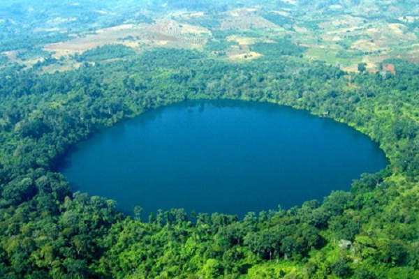
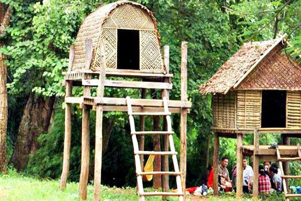
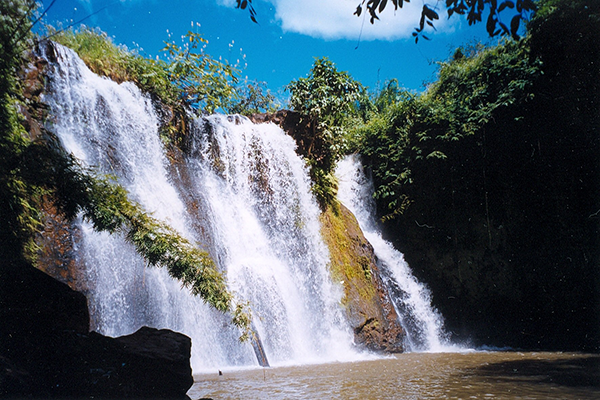
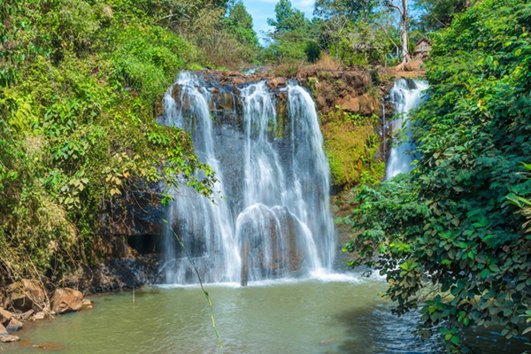

Cam Tuor

Yeak Laom Lake

Pnong Village
Kep National Park

Ka Choung Falls
Pnong Village
.jpg.png)
Pnong Village
.jpg.png)
Pnong Village

Ratanakkiri
Ratanakiri became a province of Kingdom of Cambodia in 1960 under King Norodom Sihanouk's reign. Banlung is the capital city of Ratanakiri, situated in the highland, along the National Road No19 from Ou porng Moan to the Vietnam border about 200 km. ( Ou´ porng Moan-Banlung is about 120km, Banlung-Vietnam 80k.m)
Ratanakiri has been occupied since at least the Stone or Bronze Age, and trade between the region's highlanders and towns along the Gulf of Thailand dates
to at least the 4th century A.D. The region was invaded by Annamites, the Cham, the Khmer, and the Thai during its early history, but no empire ever brought the area
under centralized control.